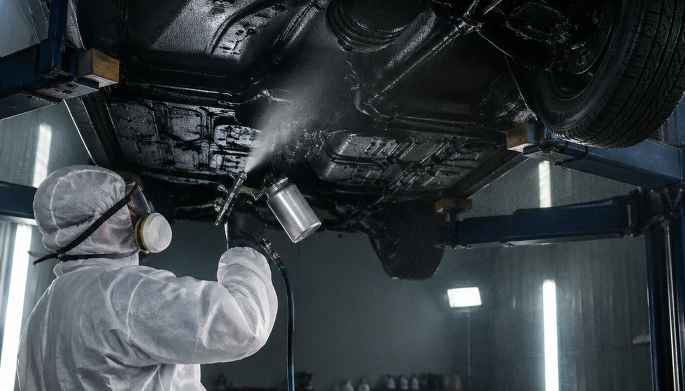
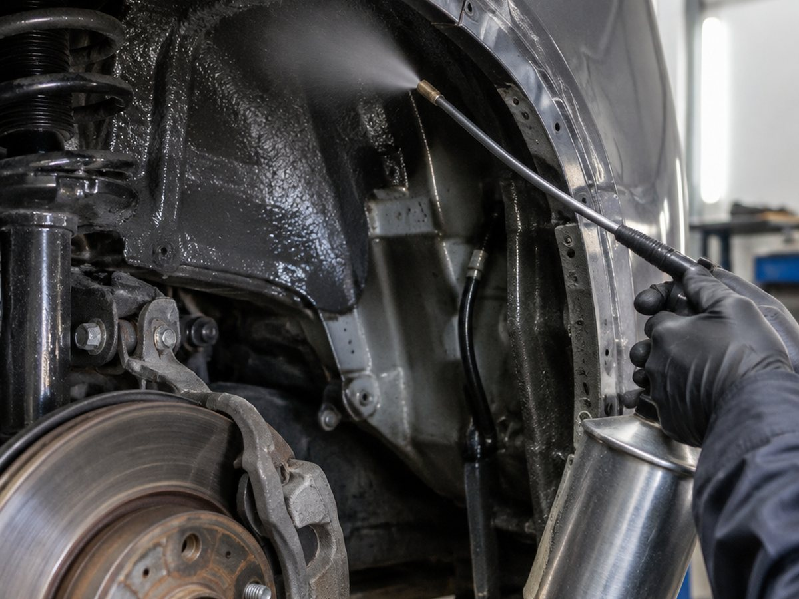
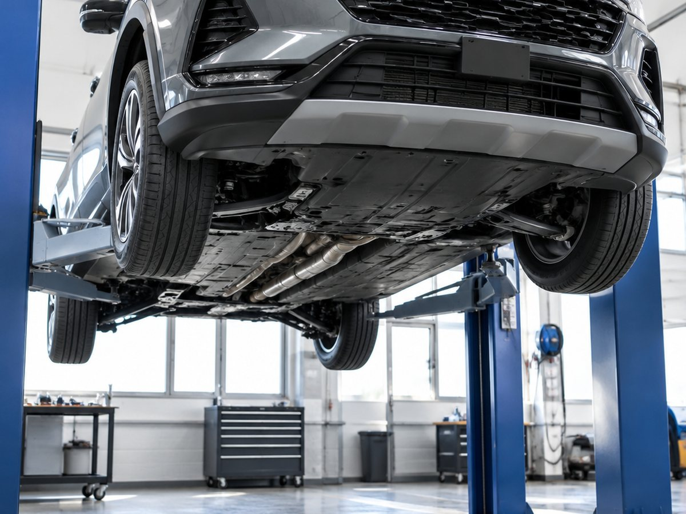

01
Днище
Мойка и сушка, снятие защиты, обработка по всей площади, включая лонжероны и подрамник.

Днище, арки и скрытые полости. Составы Dinitrol, полный фотоотчёт по каждому этапу, наличный и безналичный расчёт. Специализация — новые китайские автомобили.



Антикор работает не там, где видно, а там, где гниёт: в полостях, за подкрылками, по швам и порогам. Поэтому обработку делаем по зонам, а не «побрызгали снизу».
Мойка и сушка, снятие защиты, обработка по всей площади, включая лонжероны и подрамник.
Снимаем подкрылки, обрабатываем арку изнутри и снаружи — там, где начинается коррозия.
Пороги, лонжероны, усилители, двери и багажник — через технологические отверстия, с полным заполнением.
Днище, арки, полости и пороги за один заезд. Для легкового до 4 метров — от 500 рублей.
Смысл обрабатывать машину с салона: заводской защиты на китайских авто часто мало.
Легковой автомобиль до 4 метров. Точная цена — после осмотра.
+375 (29) 608-23-10Смотрим авто, состояние днища и арок, обсуждаем объём. Называем стоимость до начала работ.
Мойка и сушка, снятие подкрылков и защит, укрытие кузова и тормозных механизмов.
Наносим составы Dinitrol по зонам: днище, арки, пороги, скрытые полости, двери, багажник.
Ставим всё на место, отдаём машину с отчётом: фотографии каждой обработанной зоны.
Оставьте номер и модель авто — назову стоимость и свободный день. Заявка откроется в WhatsApp с готовым текстом.
Комплекс для легкового автомобиля до 4 метров — от 500 рублей. Точная стоимость зависит от состояния днища, объёма работ и набора зон: называем после осмотра, до начала работ.
На новых китайских автомобилях заводской антикор часто тонкий и не закрывает скрытые полости. Обработка с салона — самый дешёвый способ не получить коррозию через пару зим.
Зависит от объёма: комплекс с полостями — это не полчаса, машина остаётся в боксе. Точный срок скажем при записи.
Работаем на Dinitrol. Если у вас другие материалы — позвоните, обсудим.
Наличными или по безналу. Для организаций — с документами.
Приезжайте на осмотр или позвоните: скажу, что нужно вашему авто и сколько это стоит. Комплекс для легковых — от 500 руб.